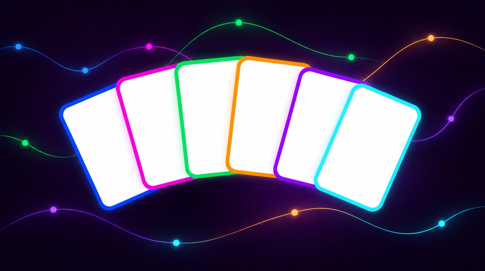

Explore
For students and educators. The full list, filtered by interest. Each card shows a tagline, the organization, a GGP-run or Partner label and a link to the official page.
The Directory
A free map of programs into games, GGP-run and partner alike: scholarships, degrees, internships, mentorship, youth game-making, career change and AI learning.

For students and educators. The full list, filtered by interest. Each card shows a tagline, the organization, a GGP-run or Partner label and a link to the official page.
For recruiters. Opt-in, early-career profiles that studios can find. Every field is the Scholar's to show or hide.
For Supporters. Pick what you care about, keep the programs that fit, then give or book a 20-minute call.
Filter the programs GGP runs or has proposed. 16 shown
A grant, a cohort and professional development for undergraduate game creators.
Sourced$1,000 grant. In its 8th year. Launched 2019. GGP Vision 2026-27.
The graduate program: a grant, mentoring, monthly workshops and GDC as the capstone.
Sourced$1,500 grant. Year 5. More than 90 alumni. GGP records, September 2026.
A national student competition in three categories: Interactive, Cinematic and Business.
Sourced22 universities and $90,000 in prizes in 2025. 2027 is in development. collegiategameschallenge.com.
Official pageWorking professionals review Scholars' work, host studio visits and answer questions.
Scholars visit 2K during GDC week, hosted by 2K.
Ran at GDC 2024, 2025 and 2026.
GGP hosts Scholars at Global Game Jam and runs workshops beforehand.
SourcedFirst-year CYSTEM Scholars shipped 10 games in 2025. GGP records.
Talks, panels, workshops and program films, free to watch.
SourcedMore than 80 videos. YouTube, November 17, 2026.
A four-week pilot for 20 Scholars, alumni and professionals on using AI with judgment.
Designed and seeking funding.
Scholars Breakfast, Tea Party, Mixer and GGP's annual party, in one day built for introductions.
Tuesday, March 2, 2027.
A free guide to programs that lead into games.
Team onlyNot announced. Team only.
Graduate business students present a go-to-market plan for a game.
A table for Scholars building their own studios.
To confirmProposed. Not yet in GGP's plan.
The alcohol-free, all-ages board game night of GDC week.
Sourced602 guests in 2026, 487 in 2025. GGP event records.
An annual GDC week tea gathering.
The 8th Annual is March 2, 2027.
An online gathering for Pride and other employee groups across games.
New for 2026-27. No date yet.
Flexible, multi-year funding to stay with people after the first introduction.
SourcedA $100,000 campaign. GGP Vision 2026-27.
Trust
Each number is marked Sourced or Derived. A card without a sourced number says so.
Each program is labeled GGP-run or Partner. Programs still seeking funding are described as proposed. The Directory shows its own review date.
Three doors. Pick yours.